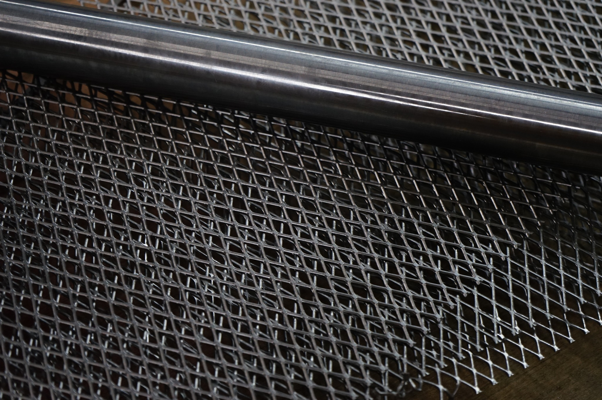
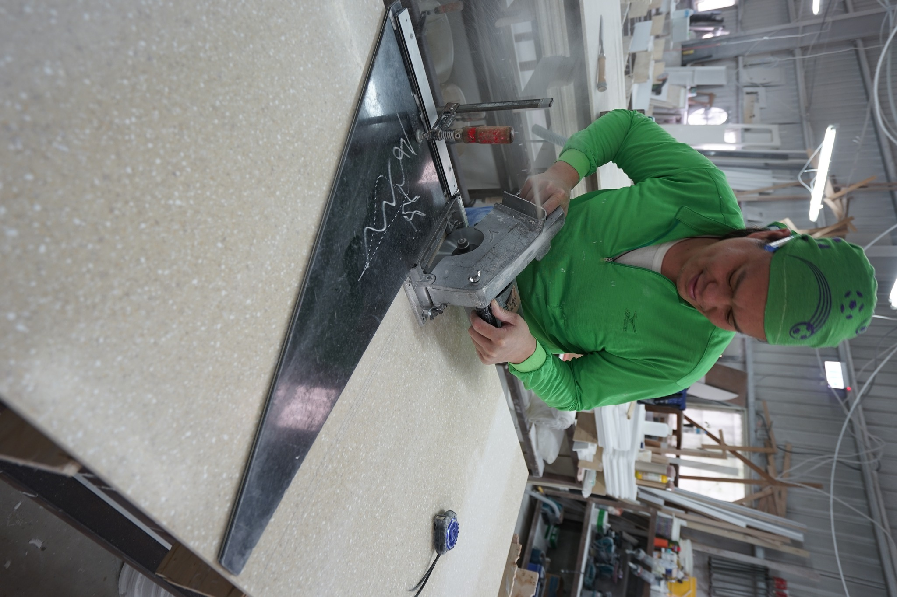
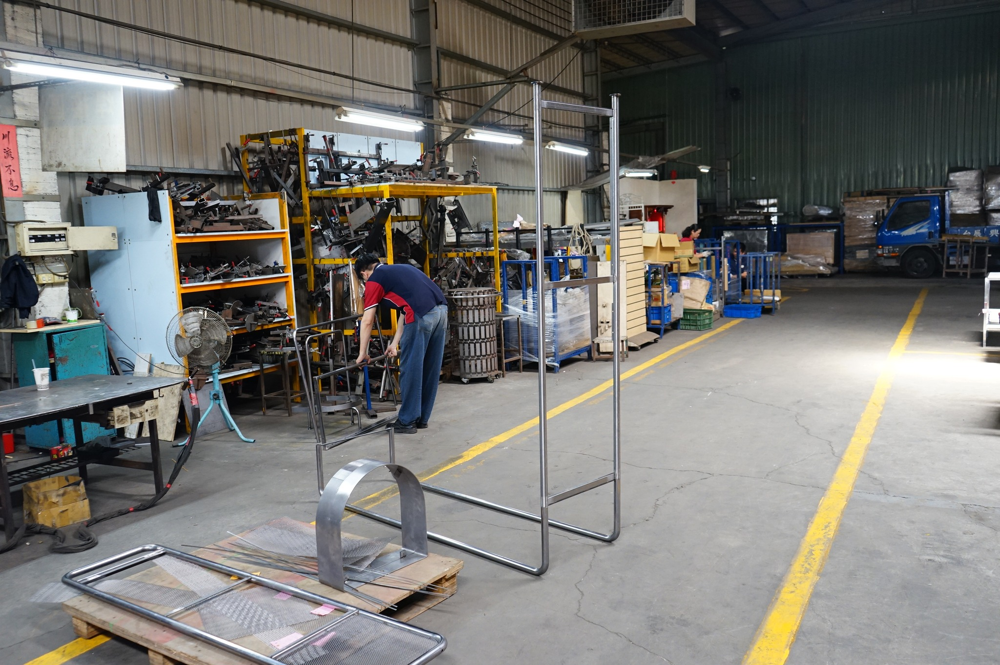

HEAVY-DUTY GEAR · VELTOR
重載懸臂與極限防垂展陳工程
對標歐美重機騎士裝備大廠規格。針對皮衣、靴鞋與安全帽等超重裝備，以厚壁鋼構與強化立柱徹底根絕久懸下垂歪斜與牆面拉裂隱患。
無論您需要一個單獨客製展架、一組專用配件，或是跨國連鎖門市的展示系統開發。Big Fame 整合冷軋鋼構、0.5mm Osamari 木作公差與平整化 K/D 結構，讓您的陳列概念無瑕落地。
對標歐美重機騎士裝備大廠規格。針對皮衣、靴鞋與安全帽等超重裝備，以厚壁鋼構與強化立柱徹底根絕久懸下垂歪斜與牆面拉裂隱患。

高透光壓克力、沖孔網板與隱藏式電源管理走線，專為精密 3C 產品檢測、零件快修與配件陳列打造。

對標日系空間商社水準。白橡木實木與金屬立柱以 45° 陰影縫精準咬合，無外露螺絲。

微距雷射切割鏡面與磁吸式防盜定位，提供光學眼鏡與精品配件最純粹的懸浮陳列感。

降低 40% 跨國貨櫃空積，門市現場一支六角扳手即可快速組裝，專為跨國連鎖批次複製打造。
不必先準備完備施工圖。提供手繪草圖、Pinterest 意象照或平面配置，工程團隊即刻進行 3D 結構拆解與力學可行性評估。
打破傳統工廠動輒數百套的 MOQ 門檻。先以 1:1 實體樣品驗證材質質感、結構咬合與陳列效果，降低展店試錯成本。
從台灣在地精工製造，經過預先試裝驗收，以平整化防震包裝與木棧板直接出口至全球門市現場，快速就位開幕。

展示網架打樣使用的無縫鋼管與高精度擴張網板材，確保每一處折角均無拉伸裂痕。

資深匠師以工裝夾具固定，將實木皮封邊條嚴絲合縫貼合於檯面周緣，無溢膠無死角。

以專用靠尺與高精版型導引，裁切商業吧台人造石檯面板材，維持 0.5mm 內公差。

彎管掛架框架組裝打樣；背景層架整齊歸檔各型號專用焊接治具，保障跨批次量產公差完全一致。
上傳手繪圖、照片、DWG/CAD 或店面平面圖。我們將於 1 個工作日內回覆結構建議、材質咬合分析與試作時程。
提供空間設計師與採購評估專案使用。內含 0.5mm Osamari 細部收口、承重力學數據與平整化 (K/D) 包裝規範。